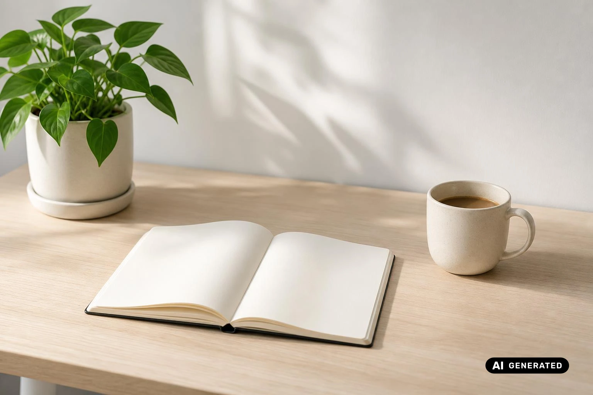
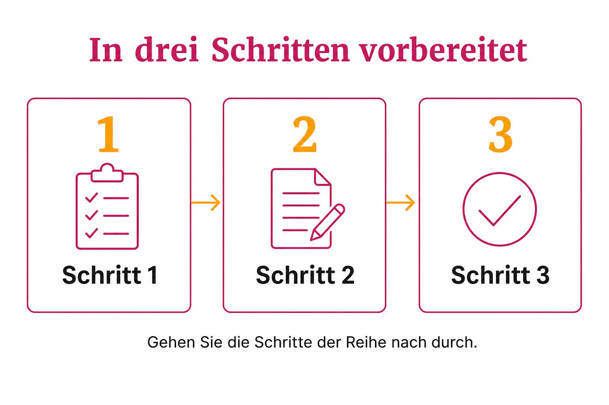
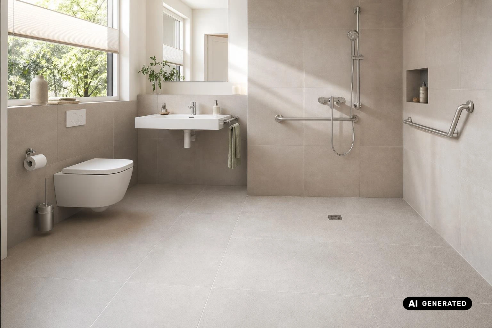
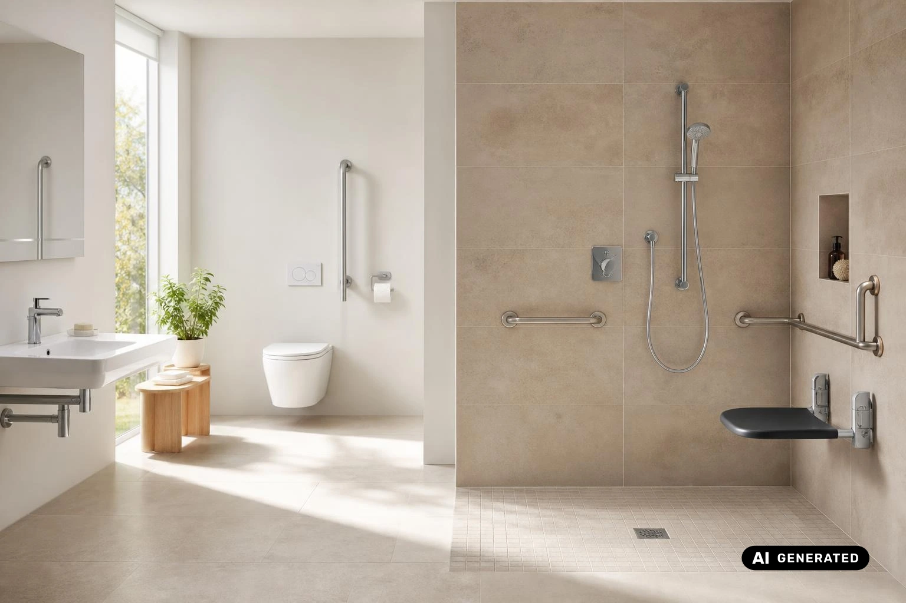
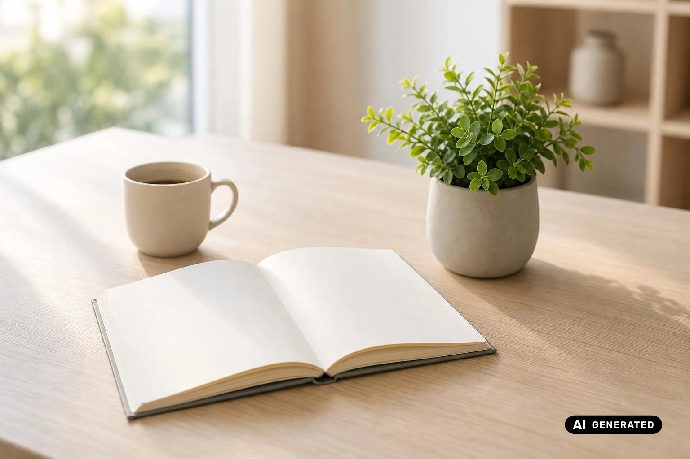

5 Tipps für mehr Bewegungsfreiheit im Bad – von Hand geändert
Bewegungsfreiheit im Bad bedeutet freie Bewegungsflächen und Wege, auf denen Sie gehen, sich umdrehen und abstützen können, ohne anzustoßen. Gerade mit Gehhilfe senkt das im Alter das Sturzrisiko. Mit guter Vorbereitung gelingt der Einstieg deutlich leichter. Die 5 Tipps gliedern sich in drei Gruppen: Platz und Zugang, Dusche und Sanitärobjekte sowie Halt und Sicherheit.

Mehr Platz, weniger Hindernisse: So gewinnen Sie Bewegungsfreiheit im Bad (Korrektur L21)
Ein barrierearmes Bad entsteht selten durch ein einzelnes Hilfsmittel. Entscheidend ist, dass die typischen Hindernisse verschwinden. Die meisten davon haben drei Ursachen: zu wenig freie Fläche, enge Türen und hohe Einstiege an Wanne oder Dusche. Mit Gehhilfe oder Rollator wird jede dieser Stellen zur Engstelle, an der Sie anstoßen, umgreifen oder sich unsicher drehen müssen.
Die fünf Tipps setzen genau an diesen Stellen an. Tipp 1 und 2 schaffen Platz im Raum und am Zugang. Tipp 3 und 4 passen Dusche, WC und Waschtisch an Ihre Bedürfnisse an. Tipp 5 sorgt dafür, dass Sie überall sicheren Halt finden. Besonders deutlich merken Sie im Alltag zwei Maßnahmen: die bodengleiche Dusche, die den Schritt über den hohen Wannenrand überflüssig macht, und eine breitere Tür, durch die Sie mit dem Rollator ohne Rangieren ins Bad gelangen.
Als Planungsgrundlage dient die DIN 18040-2. Wenn Sie mit Gehhilfe unterwegs sind und Ihr bestehendes Bad umbauen möchten, ist das eine gute Nachricht: Die meisten Maßnahmen lassen sich auch nachträglich umsetzen. Die Erfahrung aus der Praxis zeigt, dass eine gute Vorbereitung dabei den größten Unterschied macht. Am Anfang steht deshalb immer dieselbe Überlegung, nämlich wie viel freie Fläche Sie zum Gehen, Wenden und Abstützen tatsächlich brauchen.

1. Planen Sie freie Bewegungsflächen vor WC, Waschtisch und Dusche ein
Freie Bewegungsflächen im Badezimmer entscheiden darüber, ob Sie sich mit Rollator oder Gehstock sicher umdrehen, abstützen und hinsetzen können. Sie sind deshalb die Grundlage für alle weiteren Schritte beim Umbau.
Im Bad drehen Sie sich ständig: zum Waschbecken, zurück zum Handtuch, hin zum WC. Mit einer Gehhilfe brauchen Sie dafür mehr Platz als ohne, denn Rollator oder Gehstock müssen die Drehung mitmachen. Fehlt die freie Fläche zum Wenden, stoßen Sie an Wände, Schränke oder Gegenstände am Boden. Sie verlieren leichter das Gleichgewicht, und das Sturzrisiko steigt, gerade in dem Moment, in dem Sie die Gehhilfe loslassen oder umsetzen.
Halten Sie vor jedem Sanitärobjekt eine Bewegungsfläche frei, also vor WC, Waschtisch und Dusche. Eine Bewegungsfläche ist die freie Fläche ohne Möbel und Gegenstände, auf der Sie stehen, sich umdrehen und Ihre Gehhilfe abstellen können. Oft gewinnen Sie schon ohne Bauarbeiten Platz: Nehmen Sie Möbel und Wäschekörbe aus den Wegen, stellen Sie Hocker und Regale an eine Wand, an der sie nicht stören, oder lagern Sie sie in einem anderen Raum. Gehen Sie Ihre täglichen Wege im Bad einmal bewusst mit der Gehhilfe ab und achten Sie darauf, wo es eng wird.
Bewegungsflächen dürfen sich überlagern. Die Fläche vor dem Waschtisch kann also zugleich die Fläche vor dem WC sein, wenn beide Objekte nah beieinander liegen. Das spart Platz, ohne die Sicherheit zu verringern. Wie groß die Flächen mindestens sein sollen, legt die DIN 18040-2 fest, die deutsche Norm für barrierefreies Bauen in Wohnungen. Lassen Sie die Maße anhand der Norm prüfen, etwa durch einen Fachbetrieb, statt nach Augenmaß zu planen.
2. Verbreitern Sie die Badtür und lassen Sie sie nach außen öffnen
Der Weg ins Bad beginnt an der Tür. Mit Rollator oder Gehstock wird genau diese Stelle oft zur ersten Hürde.
Ist Ihre Badtür schmal und öffnet nach innen, müssen Sie sich mit der Gehhilfe seitlich durch die Öffnung schieben. Das geöffnete Türblatt nimmt Ihnen dann den Platz, den Sie direkt hinter der Tür zum Wenden und Abstellen der Gehhilfe brauchen, und schneidet in die Bewegungsfläche des Raums. Noch schwerer wiegt der Notfall: Stürzt jemand im Bad und liegt vor der Tür, lässt sie sich von außen kaum aufdrücken. Angehörige oder Rettungskräfte kommen dann nicht schnell genug hinein.
Bei der Türbreite im Bad lohnt es sich, die Öffnung von einem Fachbetrieb verbreitern zu lassen. Welches Maß dafür nötig ist, legt die DIN 18040-2 fest. Ändern Sie dabei auch die Aufschlagrichtung (die Seite, zu der sich das Türblatt öffnet), sodass die Tür in den Flur aufgeht. Fehlt dort der Platz, ist eine Schiebetür eine gute Alternative, weil sie gar nicht in den Raum schwenkt. Entfernen Sie außerdem die Türschwelle: Ein schwellenloser Zugang (ein Übergang vom Flur ins Bad ohne Stufe oder Kante am Boden) verhindert, dass die Räder des Rollators hängen bleiben oder Sie mit dem Fuß anstoßen.
Wählen Sie einen Türgriff, den Sie auch mit wenig Kraft in der Hand sicher fassen und herunterdrücken können, etwa einen Bügelgriff statt eines kleinen Drehknaufs. Das Schloss sollte sich im Notfall von außen entriegeln lassen, damit Helfer ohne Verzögerung ins Bad gelangen. So schützt die Tür im Alltag Ihre Privatsphäre, ohne im Ernstfall zur Barriere zu werden.
3. Ersetzen Sie die Badewanne durch eine bodengleiche Dusche
Der Weg in die Wanne oder Dusche entscheidet jeden Tag darüber, ob Sie sich mit Gehhilfe sicher im Bad bewegen können.
Der hohe Wannenrand gehört für Menschen mit Gehhilfe zu den größten Hürden im Bad. Um in die Wanne zu gelangen, müssen Sie ein Bein anheben, kurz auf dem anderen stehen und dabei Rollator oder Stock loslassen. Genau dieser Moment ist unsicher. Entscheidend ist die Einstiegshöhe (die Höhe, die Sie beim Betreten von Wanne oder Dusche überwinden müssen). Bei einer Badewanne ist sie besonders hoch, und auch eine klassische Duschtasse lässt noch eine Kante, über die Sie steigen müssen.
Die sicherere Lösung ist meist, die Wanne durch eine bodengleiche Dusche zu ersetzen. Bodengleich bedeutet: Die Duschfläche liegt auf derselben Höhe wie der übrige Badboden, ohne Stufe und ohne Rand. Ist die Dusche bodeneben, gehen Sie mit Ihrer Gehhilfe direkt hinein, ohne die Füße anheben zu müssen. Wer auf das Baden nicht verzichten möchte, kann die Wanne behalten, sollte dann aber auf eine passende Einbauhöhe achten, die den Einstieg erleichtert. Ganz ohne Hürde bleibt eine Wanne allerdings nie, deshalb ist die Dusche im Vergleich die barriereärmere Wahl.
Damit das Wasser nicht ins übrige Bad läuft, braucht der Boden der Dusche ein Gefälle zum Ablauf. Lassen Sie es vom Fachbetrieb so planen, dass das Wasser zuverlässig abfließt und keine Pfützen im Bad stehen bleiben. Ein weiterer Vorteil der bodengleichen Dusche: Weil keine Kante stört, kann die Duschfläche als Teil der Bewegungsfläche mitgenutzt werden. Gerade in kleineren Bädern gewinnen Sie so Platz, um sich mit der Gehhilfe umzudrehen.

4. Wählen Sie WC und Waschtisch in passender Höhe und mit genug Abstand
Wie hoch WC und Waschtisch angebracht sind und wie viel Platz zwischen ihnen bleibt, entscheidet darüber, ob Sie sich im Bad mit Gehhilfe sicher bewegen.
Ein zu niedriges WC zwingt Sie, sich tief abzusenken und mit Schwung wieder hochzukommen. Bei nachlassender Kraft in den Beinen ist das ein unsicherer Moment. Ein Waschtisch mit Unterschrank hält Sie auf Abstand, sodass Sie sich weit vorbeugen müssen. Steht das WC zu dicht an Wand oder Waschbecken, drehen und verrenken Sie sich beim Hinsetzen, statt sich gerade zu setzen.
Wählen Sie ein WC in bequemer Sitzhöhe, von dem Sie ohne großen Kraftaufwand aufstehen können. Ein unterfahrbarer Waschtisch (ein Waschbecken ohne Unterschrank, unter das Sie mit den Knien oder einem Hocker heranrücken können) erlaubt das Waschen im Sitzen. Bringen Sie den Spiegel so tief an, dass Sie sich auch im Sitzen darin sehen. Planen Sie außerdem genug seitlichen Abstand vom WC zur Wand und zum Waschbecken ein, damit Sie gerade an das WC herantreten und sich setzen können. Die genauen Höhen und Abstände nennt die DIN 18040-2. Übernehmen Sie die Werte aus der Norm, statt sie zu schätzen.
Am Waschtisch zählt auch die Armatur. Ein Thermostat hält die eingestellte Wassertemperatur gleichmäßig. Ein Verbrühschutz (eine Temperatursperre, die das Wasser nicht über einen eingestellten Höchstwert steigen lässt) verhindert, dass plötzlich zu heißes Wasser aus dem Hahn kommt. Das hilft besonders, wenn Sie langsamer reagieren oder nicht schnell genug zurückweichen können.
5. Bringen Sie Haltegriffe, Duschsitz und rutschfesten Boden an
Haltegriffe im Bad, ein Duschsitz und ein griffiger Boden sichern genau die Momente ab, in denen Gleichgewicht und Kraft am stärksten gefordert sind.
Beim Aufstehen vom WC, beim Umdrehen in der Dusche oder beim ersten Schritt auf nassen Fliesen verlagern Sie Ihr Gewicht. In diesen Augenblicken kommt es besonders leicht zu Stürzen. Ein fester Griff in Reichweite gibt Ihnen Halt, wenn die Beine kurz nachgeben oder die Gehhilfe gerade nicht greifbar ist. Ein Boden mit guter Rutschfestigkeit, also einer Oberfläche, die Füßen und Gehhilfe auch bei Nässe noch sicheren Stand bietet, verhindert das Wegrutschen, bevor es gefährlich wird.
Bringen Sie Haltegriffe dort an, wo Sie sich hinsetzen und wieder aufstehen: neben dem WC und in der Dusche. In der bodengleichen Dusche ergänzt ein Duschsitz den Halt. Das ist ein an der Wand befestigter Sitz, meist zum Hochklappen, auf dem Sie sich im Sitzen waschen können, ohne lange stehen zu müssen. Für den Boden eignen sich rutschfeste Fliesen oder Beläge, die auch im Duschbereich griffig bleiben. Lassen Sie sich vom Fachbetrieb bestätigen, dass das gewählte Material für nasse Bereiche geeignet ist.
Ein Haltegriff hilft nur, wenn er Ihr volles Körpergewicht trägt. Er muss deshalb tragfähig in der Wand befestigt sein; klären Sie vor der Montage mit einem Fachbetrieb, ob die Wand diese Last aufnehmen kann. Ebenso wichtig ist das Licht: Eine helle, blendfreie Beleuchtung macht Kanten, Wasserpfützen und Griffe gut sichtbar. Den Lichtschalter sollten Sie direkt beim Betreten des Bads erreichen können, auch nachts mit Gehhilfe in der Hand. Griffe und Licht lassen sich vergleichsweise leicht nachrüsten – ob dagegen auch breitere Türen, freie Wendeflächen und eine Dusche ohne Stufe Platz finden, entscheidet in manchen Bädern erst der Grundriss.

Wo mehr Bewegungsfreiheit im Bad an Grenzen stößt
Wer ein kleines Bad barrierearm umbauen möchte, kann nicht immer alle fünf Tipps vollständig umsetzen. Besonders unter einer Dachschräge (einer schräg zum Boden abfallenden Decke direkt unter dem Dach) fehlt oft der Platz, sodass durchdachte Kompromisse gefragt sind.
- Schiebetür statt Drehtür: Eine Schiebetür gleitet an der Wand entlang und braucht keinen Raum zum Aufschwenken. So bleibt die Bewegungsfläche hinter der Tür frei, auch wenn sich der Türdurchgang selbst nur begrenzt verändern lässt.
- Eck-Waschtisch: Ein Waschtisch in der Raumecke nutzt eine Fläche, die sonst häufig ungenutzt bleibt. Sie gewinnen dadurch Platz vor WC und Dusche, müssen aber meist mit weniger Ablagefläche am Waschplatz auskommen.
- Verzicht auf die Wanne: Wo Wanne und Dusche nicht nebeneinander passen, schafft eine bodengleiche Dusche anstelle der Wanne spürbar mehr Platz, weil ihre Fläche zugleich zum Bewegen dient. Wer ungern auf das Baden verzichtet, wägt diesen Schritt am besten vor der Planung bewusst ab.
- Stehhöhe unter der Schräge: Die Stehhöhe zeigt, an welchen Stellen Sie unter der Dachschräge aufrecht stehen können. Danach richtet sich, wo WC und Dusche stehen können, denn dort stehen Sie auf und bewegen sich mit Gehhilfe, während niedrigere Zonen eher Schränke oder Ablagen aufnehmen.
Wie setzen Sie mehr Bewegungsfreiheit im Bad in der Praxis um?
Wer ein bestehendes Bad nachträglich barrierefrei umbauen möchte, kommt mit einer Checkliste sicher ans Ziel: einer schriftlichen Liste aller Prüfpunkte, die Sie Schritt für Schritt abhaken. In der Praxis macht eine gute Vorbereitung den größten Unterschied. Die folgende Reihenfolge hilft Senioren mit Gehhilfe und ihren Angehörigen, beim Umbau nichts zu übersehen.
- Bestand prüfen: Gehen Sie das Bad mit Zollstock und Checkliste ab und notieren Sie, wo es eng oder unsicher wird: bei den Bewegungsflächen (Tipp 1), an der Tür (Tipp 2), beim Einstieg in Dusche oder Wanne (Tipp 3), bei WC und Waschtisch (Tipp 4) und beim Halt (Tipp 5). Prüfen Sie am besten gemeinsam mit der Person, die das Bad täglich nutzt.
- Prioritäten setzen: Ordnen Sie die notierten Punkte danach, wo im Alltag die größte Sturzgefahr oder die meiste Mühe entsteht. Kleinere Maßnahmen wie Haltegriffe (Tipp 5) lassen sich oft vorziehen, während der Ersatz der Wanne (Tipp 3) mehr Planung braucht.
- Fachbetrieb beauftragen: Beauftragen Sie einen Fachbetrieb mit Beratung und schriftlichem Angebot, der die DIN 18040-2 als Planungsgrundlage nutzt. Er klärt auch, was baulich möglich ist, etwa beim Verbreitern der Tür.
- Förderung vor dem Auftrag klären: Klären Sie mögliche Förderung, bevor Sie den Auftrag für den Umbau verbindlich erteilen. Erst wenn diese Frage beantwortet ist, unterschreiben Sie den Vertrag.
- Umbauen: Planen Sie für die Bauzeit eine Ausweichmöglichkeit zum Waschen und Duschen ein. Nach Abschluss prüfen Sie mit der Checkliste aus Schritt 1, ob jeder Punkt erledigt ist.

Seniorengerecht oder rollstuhlgerecht: Welche Bewegungsfreiheit im Bad brauchen Sie?
Seniorengerecht, rollstuhlgerecht und behindertengerecht klingen ähnlich, meinen aber unterschiedliche Anforderungen an Platz und Ausstattung. Als Planungsgrundlage für ein barrierefreies Bad dient die DIN 18040-2. Welche Bezeichnung zu Ihrem Umbau passt, hängt vor allem davon ab, ob Sie mit Gehhilfe oder im Rollstuhl unterwegs sind.
- Seniorengerecht (auf die Bedürfnisse älterer Menschen ausgerichtet): Zielgruppe sind Menschen, die mit Gehstock oder Rollator gehen und sich sicher bewegen wollen. Typische Anforderungen sind freie Wege zum Wenden mit der Gehhilfe, eine bodengleiche Dusche statt hohem Wannenrand, Haltegriffe an WC und Dusche sowie ein rutschfester Boden.
- Rollstuhlgerecht (vollständig mit dem Rollstuhl nutzbar): Zielgruppe sind Menschen, die dauerhaft auf einen Rollstuhl angewiesen sind. Typische Anforderungen sind deutlich größere freie Flächen zum Rangieren und Wenden sowie unterfahrbare Sanitärobjekte, etwa ein Waschtisch, unter den man mit den Knien heranfahren kann.
- Behindertengerecht (Sammelbegriff für Bäder, die auf eine Behinderung zugeschnitten sind): Zielgruppe sind Menschen mit ganz unterschiedlichen Einschränkungen. Typische Anforderungen legt keine eigene Norm fest; sie ergeben sich aus der jeweiligen Einschränkung und werden einzeln geplant.
Für Menschen ab 70 mit Gehhilfe genügt meist ein barrierearmes, seniorengerechtes Bad, während die zusätzlichen Flächen und unterfahrbaren Objekte eines rollstuhlgerechten Bads vor allem dann nötig werden, wenn ein Rollstuhl dauerhaft zum Alltag gehört.
Fazit zur Bewegungsfreiheit im Bad
Ein Bad, das Sie mit Gehhilfe sicher nutzen können, beruht auf drei Dingen: Platz, einem ebenen Zugang und festem Halt. Eine frei gehaltene Bewegungsfläche vor WC, Waschtisch und Dusche senkt das Sturzrisiko, weil Sie dort ohne Hindernis wenden und sich abstützen können. Ein stufenloser Duscheinstieg löst den hohen Wannenrand als größte Hürde ab, und die bodengleiche Dusche wird zugleich Teil der freien Fläche. Haltegriffe an WC und Dusche stützen Sie in dem Moment, in dem Sie sich aus dem Sitzen aufrichten. Wie weit die Maßnahmen gehen müssen, hängt von Ihrer Lage ab: Mit Gehhilfe genügt meist ein barrierearmes Bad, ein Rollstuhl verlangt dagegen deutlich mehr Fläche und unterfahrbare Objekte. Auch der Raum selbst setzt Grenzen. Ein großes Bad lässt alle Tipps zu, ein kleines Bad oder eine Dachschräge erfordert dagegen Kompromisse.
Für Menschen ab 70 mit Gehhilfe gibt es mehrere gute Anlässe, das eigene Bad unter die Lupe zu nehmen. Beim Umbau im Bestand beseitigen Sie zuerst die größten Hindernisse, etwa enge Wege oder den Wannenrand. Wer vor dem Ruhestand ohnehin renoviert, plant Bewegungsflächen und eine tragfähige Befestigung für spätere Haltegriffe gleich mit ein. Und wer ein Bad für Angehörige herrichtet, schafft mit klaren Wegen und festem Halt mehr Sicherheit im Alltag. Die Erfahrung aus der Praxis zeigt, dass eine gute Vorbereitung den größten Unterschied macht: Mit der Checkliste und einem Fachbetrieb gehen Sie die einzelnen Schritte in einer sinnvollen Reihenfolge an.
Häufig gestellte Fragen zur Bewegungsfreiheit im Bad
Welche Normen gelten für ein barrierefreies Bad?
Als Planungsgrundlage für ein barrierefreies Bad in Wohnungen gilt die DIN 18040-2, die Anforderungen an Bewegungsflächen, Türen, Dusche, WC und Waschtisch beschreibt. Lassen Sie die für Ihr Bad passenden Werte aus der Norm oder von einem Fachbetrieb übernehmen, statt Maße zu schätzen, damit die Planung zu Ihrer Gehhilfe passt.
Was kostet ein barrierefreies Badezimmer?
Die Kosten für ein barrierefreies Badezimmer hängen vor allem vom Umfang ab, also davon, ob Sie nur Haltegriffe ergänzen, die Wanne durch eine bodengleiche Dusche ersetzen oder Türen und Raumaufteilung verändern. Holen Sie deshalb vor dem Umbau ein schriftliches Angebot eines Fachbetriebs ein, das alle geplanten Arbeiten einzeln aufführt.
Welche staatlichen Fördermittel können Sie nutzen?
Für den barrierearmen Umbau eines Bads gibt es staatliche Fördermöglichkeiten; welche davon für Sie passt, hängt von Ihrer persönlichen Situation und den geplanten Maßnahmen ab. Klären und beantragen Sie die Förderung, bevor Sie einen Fachbetrieb mit dem Umbau beauftragen, und lassen Sie sich die Bedingungen bei der zuständigen Stelle bestätigen.
Welcher Tipp ist am wichtigsten?
Den größten Unterschied machen in den meisten Bädern die bodengleiche Dusche und freie Bewegungsflächen, weil der hohe Wannenrand und fehlender Platz zum Wenden für Menschen mit Gehhilfe die größten Hürden sind. Welcher Tipp bei Ihnen Vorrang hat, hängt jedoch vom Bestand ab, etwa von Raumgröße, Dachschräge oder vorhandener Badewanne.
Gibt es spezielle Vorschriften für private Bäder?
Für private Bäder gilt die DIN 18040-2 in der Regel als Empfehlung und nicht als Pflicht, sie bietet aber eine Orientierung für sichere Bewegungsflächen, Zugänge und Sanitärobjekte. Lassen Sie sich vor dem Umbau von einem Fachbetrieb beraten, der die Norm kennt und sie auf Ihr Bad und Ihre Gehhilfe überträgt.